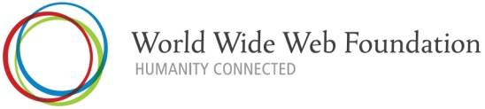

Ringraziamenti
- Questa presentazione utilizza anche materiale
proveniente da:
- Il materiale di questa presentazione può
essere riutilizzato nel rispetto dei diritti di
proprietà intellettuale, secondo la normale prassi
scientifica, e delle regole del W3C
Una riflessione
“ The people who built the Internet and Web have
a real appreciation of the value of
individuals and the value of systems in which
individuals play their role, with both a firm sense of
their own identity and a firm sense of some common
good.
[…]
I was very lucky, in working at CERN, to be in an
environment that Unitarian Universalists and
physicists would equally appreciate: one of mutual
respect, and of building something very great
through collective effort that was well beyond
the means of any one person - without a huge
bureaucratic regime.
[…]
The system produced a weird and wonderful machine,
which needed care to maintain, but could take advantage
of the ingenuity, inspiration, and
intuition of individuals in a special way.
That, from the start, has been my goal for the
World Wide Web. ”
(Tim Berners-Lee - Weaving the Web, p. 208-209)
Sono orgoglioso di ...

Happy birthday, W3C

Tim Berners-Lee e Oreste Signore
W3C e accessibilità
W3C e Web
World Wide Web Consortium (W3C)

“To lead the World Wide Web to its full potential
by developing protocols and guidelines that ensure
long-term growth for the Web”
- Fondato da Tim Berners-Lee nel 1994
- Meccanismo di funzionamento piano ed efficace
- Visione globale
- Definisce Recommendation aperte (Web
Standards)
- Svolge attività di formazione, sviluppa linee
guida…
-
È un forum neutrale per creare consenso
sugli standard web
- Gli standard proposti non derivano da posizioni
dominanti sul mercato
Alcuni principi guida del W3C
- Le tecnologie Web dovrebbero essere interoperabili
- il Web è basato su un ampio spettro di
tecnologie
- nessuna tecnologia può pretendere di
coprire tutte le esigenze del Web
- l' interoperabilità delle
tecnologie è assolutamente necessaria
- Gli Standard Web dovrebbero essere degli “
open standard”, quindi
non-proprietari
- Il Web deve essere accessibile a tutti
Lo stack delle tecnologie W3C
Vision: il futuro del Web
- Dal Web di
- linked documents
- creators & consumers
- ... verso One Web
- of Linked Data
- on Everything
- for Everyone
One Web is…
The same information is available to all users,
regardless of who they are, where they are, what system
they use, or how they are connected
One Web of Linked Data
L' architettura del Semantic Web

-
Il Semantic Web ...
-
- è un' infrastruttura basata su metadati
per poter svolgere ragionamenti sul Web
-
estende, non sostituisce il web attuale
-
I metadati sono:
-
- Informazioni, elaborabili automaticamente
(machine understandable), relative a una
risorsa web o a qualche altra cosa
- ... data about data
- ... informazioni che possono essere utilizzate da
intelligent software agents per fare un uso
appropriato delle risorse
- ... dati ...
- ... che possono essere descritti da altri
metadati ...
L' integrazione dei dati: il ruolo delle tecnologie

One Web: On Everything
One Web on every surface
One Web on every device
One Web, accessible via a range of interactions
Tom Cruise in Minority Report Spielberg (2002)
One Web: For Everyone, Connecting & Empowering All
People
Il valore sociale del Web
The social value of the Web is that it enables
human communication, commerce, and opportunities to share
knowledge [and] to make these benefits available to
all people, whatever their hardware, software,
network infrastructure, native language, culture,
geographical location, or physical or mental ability
Il Web 2.0: è un ambiente sociale?
David Simonds, The Economist
W3C e accessibilità
Digital Divide
Lo sviluppo sociale: punto d' incontro tra eGov e Mobile
Web
- Alta penetrazione della telefonia cellulare…
- …e anche i governi cercano di utilizzare al
meglio la tecnologia dei cellulari
Come fornire accesso all' ICT?
- Con PC economici: One Laptop Per Child?
- Con telefoni speciali?
-
Con il Mobile Web:
- Vantaggio dell' esistenza di oltre 2,7 miliardi
di cellulari
- Vantaggio della copertura GSM (>80% della
popolazione mondiale)
È il telefono cellulare, non il PC che
può colmare il “digital divide”
Le sfide e il W3C
- Come rendere usabile il Mobile Web?
-
accessibilità dei browser per
dispositivi mobili: configurazione, interfaccia e
interazione…
-
accessibilità dei contenuti web:
interfacce ”naturali“ e interazione
- Obiettivo W3C: rendere il Web accessibile,
importante, usabile e utile per le popolazioni
svantaggiate e le comunità rurali
- Mobile Web, eGovernment, etc.
Cosa può fare il Web per l'umanità?
-
Qualche numero
-
- Non usano il Web: ~5,000,000,000
- Vivono con un reddito di $1.25/giorno o meno:
~1,400,000,000
- Denutriti: ~920,000,000
- Analfabeti: ~900,000,000
-
Molti altri ostacoli
-
- Assenza di supporto per lingue e caratteri
- Mancanza di supporto per i disabili
- Soluzioni proprietarie vs open standard
- Censura, discriminazione nell'accesso
- Comprendere il funzionamento del Web
- Comprendere come il web può dare maggior
potere alle persone
(dati 2007/2008)
La World Wide Web Foundation

-
http://www.webfoundation.org/
- Advance the Web
- Connect humanity
- Empower people
- “The Web Foundation will break-down the
barriers that now prevent billions of people from
being connected and empowered by the Web, while
advancing future technologies leading toward a
more capable, useful and usable Web for all people on
the planet.”
W3C e accessibilità
Web Accessibility
Initiative
Web for Everyone
“The Web is more a social creation than
a technical one. I designed it for a social effect - to
help people work together - and not as a
technical toy. The ultimate goal of the Web is to
support and improve our weblike existence in
the world.”
(Tim Berners-Lee - Weaving the Web, p. 123)
-
Valore sociale del Web: comunicazione
interpersonale, commercio, condivisione di conoscenza
- Rendere questi benefici disponibili a tutti,
indipendentemente da hardware, software, infrastruttura
di rete, lingua madre, cultura, posizione geografica,
capacità fisiche o mentali
- W3C investe per supportare l' estensione delle
tecnologie web e dei relativi benefici.Web accessibility, internazionalizzazione, device independence sono
particolarmente importanti.
Perché accessibile?
- Norma di legge?
-
è un obbligo, spesso visto come fine a
se stesso
- Professionalità?
- comprensibilità, usabilità,
qualità, …
-
è un buon motivo
- Cultura?
- principi di base della convivenza civile
e del Web
- è la vera ragione
O.M.S.: cosa era la disabilità (1980)
International Classification of Impairments,
Disabilities and Handicaps (ICIDH), 1980
-
Menomazione (Impairment)
-
Qualsiasi perdita o anormalità a carico di una
struttura o una funzione psicologica, fisiologica,
anatomica
-
Disabilità
-
Limitazione o perdita (conseguente a menomazione) della
capacità di compiere una attività nel
modo e nell’ampiezza considerati normali
-
Handicap
-
Condizione di svantaggio conseguente a una menomazione
o a una disabilità che limita o impedisce
l’adempimento del ruolo normale per tale
soggetto, in relazione all’età, al sesso,
ai fattori socioculturali
O.M.S.: cosa è la disabilità (2001)
International Classification of Functioning,
Disability and Health (ICF), 2001
- Copre tutti gli aspetti della salute umana,
raggruppandoli in:
-
health domain (vedere, udire, camminare,
imparare e ricordare)
-
healt related domains (mobilità,
istruzione, partecipazione alla vita sociale, etc.)
-
integra aspetti medici e sociali: per ciascuna
delle voci classificate, a ciascun individuo vengono
associati uno o più qualificatori che
quantificano il suo "funzionamento"
- "funzionamento umano" in generale: modello
universale, copre l'intero arco della vita
(bambini e anziani)
-
attività invece di
disabilità
-
partecipazione invece di handicap
I vari tipi di disabilità e i problemi
-
visiva
-
grafici o video senza spiegazioni,tabelle o frame con
cattivo linguaggio di marcatura e non ben
linearizzabili,assenza del supporto della
tastiera,incompatibilità con gli screen reader
-
uditiva
-
assenza di sottotitoli, testo senza indicazione degli
elementi strutturali (signposts)
-
fisica
-
assenza del supporto della tastiera o di menù
azionabili con un solo tasto (single-switch)
-
cognitiva o neurologica
-
navigazione poco coerente, presentazione o linguaggio
difficili, assenza di materiale illustrativo non
testuale, scritte lampeggianti o in movimento
Componenti della Web Accessibility
-
Contenuto
-
Testi, immagini, moduli, multimedia, applicazioni, etc.
-
Sviluppatori
-
Usano authoring tool, editor, strumenti di valutazione,
CMS (Content Management Systems).
Dovrebbero essere accessibili e produrre
contenuti accessibili
-
Utenti
-
Usano User Agent (browser, media player, etc.)
per accedere al contenuto.
Se giocano bene il loro ruolo, servono meno
accorgimenti per rendere accessibili i contenuti
- W3C sviluppa:
-
linee guida per l' accessibilità
(per Authoring Tools, Web Content, User Agents)
-
specifiche tecniche (HTML, XML, CSS, SVG,
SMIL, etc.)
WAI: Web Accessibility Initiative
 Le tre linee guida:
Le tre linee guida:
-
Web Content Accessibility Guidelines
come creare contenuti Web accessibili
WCAG 1.0 (1999,
Recommendation)
e WCAG 2.0 (W3C Recommendation - 11
dicembre 2008) [vedi il comunicato
stampa]
-
Authoring Tool Accessibility Guidelines
come progettare strumenti di authoring
utilizzabili da autori disabili, e che producono
contenuti Web accessibili
ATAG 1.0 (2000,
Recommendation)
e ATAG 2.0 (Working
Draft - 8 luglio 2010)
-
User Agent Accessibility Guidelines
cosa devono fare gli sviluppatori di software per
migliorare l' accessibilità dei mainstream
browser a dei multimedia player per
consentire un migliore accesso alle risorse Web per le
persone affette da deficit uditivi, cognitivi, visivi,
fisici
(Browser, UAAG 1.0,
2002, Recommendation) e
UAAG 2.0 (Working
Draft - 17 giugno 2010)
- … e anche altre specifiche…
- … e anche altre iniziative (formazione,
valutazione, etc.)…
Prossimamente parleremo di …
Conclusioni
- Il World Wide Web
- Ancora molti margini di evoluzione (leading
the Web to its full potential)
- Il W3C guida l' evoluzione del Web, grazie
al contributo dei suoi membri
- Il Web è nato con una forte carica
ideale
-
 Il
Web non è solo tecnologia, ma…
Il
Web non è solo tecnologia, ma…
-
Humanity Connected by Technology…
- …e cosa possono fare la tecnologia e i
collegamenti per dare maggior potere a tutti
-
L' accessibilità è connaturata nel
Web ed è il risultato di un approccio
culturale
- Accessibilità significa anche superare le
differenze culturali e tecnologiche
-
Tutte le normative fanno riferimento a
WCAG


: utilizzo di un cellulare da un' imbarcazione")

{kind=link}